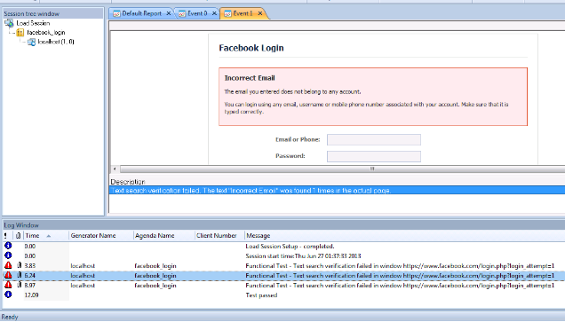

Functional Verification Testing
WebLOAD Console combines unified load, performance, and functional testing into a single process, allowing you to verify the scalability and integrity of Web applications at the per-client, per-transaction, and per-instance level under user-defined load conditions. By creating and analyzing the Document Object Model (DOM) for every Virtual Client during a test session, WebLOAD Console is able to verify each success and failure and present detailed information to you about each transaction.
The WebLOAD Functional Verification Test Tool is an easy-to-use tool which automates the process of inserting verification tests into the script and verifies that the links, images, forms, tables and frames in your Web application continue to act as expected.
WebLOAD Console also enables you to insert application level transactions into the script and define verification criteria, which compare expected outcomes against actual ones. WebLOAD Console tracks the success and failure rates of the transactions for each Virtual Client and integrates the data into the WebLOAD Statistics Report. You can find additional information about functional testing in the WebLOAD Recorder User’s Guide.
The Functional Testing Tab
The verification tests you specify within WebLOAD Console are performed on all Web pages in the script. To configure verification tests on all pages, set the global verification options through the Default / Current Session Options Functional Testing dialog box. This section describes the options available through the Functional Testing tab.
Opening the Functional Testing Tab
To open the Functional Testing tab:
- Click Default Options in the Tools tab of the ribbon or select Default Options
from the Console System button to set the verification tests to run for all scripts,
-Or-
Click Current Session Options in the Tools tab of the ribbon or select Current Session Options from the Console System button to set the verification tests to run for the current session.
The Functional Testing tab opens.

No global verification tests are selected by default.
The Functional Testing tab enables you to insert verification tests into the script that verify that the links, images, forms, tables, titles, and frames on your Web application continue to act as expected. You can also set tests to verify selected text and to report the default values presented on each form. Each test can be assigned a different severity level.
Note: Tests set through the Current Sessions Options dialog box override the Default Options dialog box settings.
You can choose to compare any or all of the following:
- Each Web page title.
- For each collection of forms, frames, images, and links, the URL and the number of each object within each collection, as well as the number of elements found on each form.
- The number of tables and/or structure. You can also:
- Search for a specific user-defined string throughout the script.
- Report the default values for each element in all forms found in the script.
- Select the tests you want to run and specify the severity level of the test results, which determines how the script will continue to execute.
For information on severity levels, see Verification Function Return Values .
Selecting the Tests to Perform
Once the Functional Testing tab is open, you must decide which tests you want to perform. The tests are performed on all pages in the script.
WebLOAD Console enables you to select specific tests to run.
In each case you can specify the severity level in case of test failure, which determines whether the script will continue to execute or not.
For full details, see Verification Function Return Values .
Verifying Text
Use Text verifications to verify the absence or presence of selected text expressions within your Web page.
To insert a text verification test into your script:
-
Open the Functional Testing tab, as described in Opening the Functional Testing Tab.
-
Select the Verification checkbox.
-
Select the percentage of time the tests should be performed. This is the percentage of Virtual Clients that will perform the verification tests.
-
Select the checkbox adjacent to the Text Search test.
Note: Selecting a lower level checkbox selects and highlights the upper level checkbox.
-
Select the severity level from the drop-down list next to the test.
-
Enter a literal string with the text for which you are searching in the Text field. The text string is case sensitive.
A search on the specified text is performed throughout the entire HTML, including the tags.
-
Select the type of test to run from the drop-down list in the Option field:
-
Find ‒ The verification test will pass if the selected text is found in the current Web page.
- Not to Find ‒ The verification test will fail if the selected text is found in the current Web page.
For example, to ensure that the word error does not appear on the page during runtime, enter the word error in the Text field, and select Not to Find. If the text error is found on the page, WebLOAD Console will report the error.
-
Select the severity level from the Severity drop–down list. For further information, see Verification Function Return Values .
-
Click Add to add another string to the list of Text Search strings.
-
Click Delete to delete a selected string from the list of Text Search strings.
-
Click OK.
User-Defined Transactions and Verification
Using WebLOAD Console, you can define application-level transaction and verification criteria to determine whether the transaction succeeded or failed. When a user-defined transaction executes, WebLOAD Console initiates a timer and a counter. The timer measures the time required to execute the transaction. The counter tracks the success and the failure rate of the transactions, based on user-defined criteria. For each transaction, the counter automatically increments either the “successful transaction count” or the “failed transaction count.” WebLOAD Console also lets you define the behavior of the program depending on the transaction results.
WebLOAD Console tracks all of the results from user-defined transactions and integrates the data into the WebLOAD Statistics Report, including the timer and counter statistics as well as statistics on specific failures. The results are then automatically displayed with the other WebLOAD Console statistical information.
Including a User-Defined Transaction in your script
Application-level transactions and verifications are defined through the WebLOAD Recorder script editing functions. See the WebLOAD Recorder User’s Guide for more information.
User-Defined Transactions and Verification Syntax
BeginTransaction(“`<Transaction-Name>`“)
`<any valid JavaScript statements>` EndTransaction(“`<Transaction-Name>`“,
`<Verification-Expression>`,`<Save-Flag>`)
Where:
-
Transaction-Name is a user-supplied string.
-
Verification-Function (optional) is the name of the function to be called that evaluates the transaction severity level (MinorError, Error, SevereError or Custom Function). If no such expression is present, the default value is Success.
- save-flag is an optional Boolean flag specifying whether WebLOAD Console should save only the results of problematic transaction instance that triggered an error (default), or save all transaction instances.
User-Defined Transaction Example
The following example illustrates implementing a user-defined transaction:
BeginTransaction(“UpdateBankAccount”)
/\* The user-defined transaction “UpdateBankAccount” starts\*/ try {
wlHttp.ExpectNavigation(“http://…”) wlHttp.Navigate([“www.](http://www/) com”)
wlHttp.SyncDOM(1);
}
/\* The body of the transaction\*/
<any valid JavaScript statement>
EndTransaction(“UpdateBankAccount”,
UpdateBankAccount\_VerificationFunction()) function UpdateBankAccount\_VerificationFunction()
{
return WLSuccess;
}
/\* The user-defined transaction “UpdateBankAccount” ends\*/
Note: The user-supplied UpdateBankAccount_VerificationFunction() is called to determine whether the transaction succeeded or failed. This function can be defined either in the script or in an included file.
If during the test the above transaction succeeded 15 times and failed 5 times, and it took an average of 1.2 seconds for the transaction to execute, the Statistics Report displays as follows:
| Total UpdateBankAccount transactions | 20 |
|---|---|
| Successful UpdateBankAccount transactions | 15 |
| Failed UpdateBankAccount transactions | 5 |
| UpdateBankAccount timer | 1.2 sec |
Note: The transaction timer measures the time it took to execute the code between the BeginTransaction statement and the EndTransaction statement.
Verification Function Return Values
You define the pass/fail criterion for user-defined transactions. For each verification test you must also specify the severity level of a failure. The severity level determines the execution path when the main script resumes control. Thus, depending on the severity level, you can program the test to ignore the failure, jump to the next navigation block, or stop the test. Extreme failures with high severity levels can be set to abort the test, whereas less severe failures can be ignored.
You set the severity level in the return statement of the verification function. The assigned severity levels and their results are handled in the same manner as other test failure results in WebLOAD Console. All failures are logged and are displayed in the WebLOAD Console log window. Refer to Appendix C: WebLOAD Console Error Messages for more details on severity levels.
Transactions may be assigned one of the following return values:
| Severity Level | WebLOAD Behavior |
|---|---|
| Success | The transaction completed successfully. |
| MinorError | The specific transaction failed, but the script continues to execute from the following statement. |
| Error | The specific transaction failed. The script continues from the next navigation block. |
| SevereError | The specific transaction failed. The Load Generator on which the error occurred is stopped. |
Note: If a return value (return()) is not specified, the default value is Success, indicating that the transaction completed successfully.
Reporting Events
WebLOAD Console enables you to record specific events and transaction instances as they occur. This information is very useful when analyzing website performance with Data Drilling, described in Data Drilling .
Record transaction events with the following syntax:
ReportEvent (“<event-name>“, [“<description>“])
Where:
- event-name is a string that identifies the specific event.
- description is an optional string providing more information about the specific event.
Tracking Reasons for Transaction Failure
WebLOAD Console enables you to specify possible reasons for the failure of a given transaction. WebLOAD Console tracks the reasons for failure individually, in the Statistics Reports. The reasons for the transaction failure must be specified in the verification function.
The default reason for failure of basic transactions is General-Failure. Unless another reason for failure is specified, this is set automatically whenever the transaction fails.
Set the reason for a transaction failure using the following syntax:
SetFailureReason (“<failure-reason>“)
For example:
Continuing the UpdateBankAccount transaction example described in User-Defined Transactions and Verification (see User-Defined Transactions and Verification Syntax , the UpdateBankAccount verification function might appear as follows:
function UpdateBankAccount\_VerificationFunction()
}
VerifyUpdateBankAccount () { if <Condition-success> then
return(WLSuccess)} else
if (document. URL == “../no-login”) then { SetFailureReason(“User Not Logged”) return(WLError) }
else
if (document.URL == “...wrong- password”) then { SetFailureReason(“Wrong Password”) return(WLError); }
else
return(WLSevereError)
}
Explanation:
- Return(WLSuccess) ‒ indicates that the actual transaction succeeded and it is added to the SuccessfulUpdateBankAccount transactions counter.
- The SetFailureReason() function accepts a string as a parameter. This string is used to identify the cause of the transaction failure (“User Not Logged”, “Wrong Password”, etc.). This data enables tracking of the number of failures that occur for a specific reason, as well as the time that the failures occurred.
- When the reason for failure is “User Not Logged” or “Wrong Password”, the severity level is Error. Consequently, when the main script resumes control the current round aborts and a new round commences.
- If you mark the transaction as failed, but do not specify any failure reason, the system registers a “General Failure” which is the default failure severity.
If during the execution of a test the above transaction succeeded 15 times and failed 5, and the SetFailureReason() function was called 3 times with the string “Wrong Password” and 2 times with the string “User Not Logged”, the Statistics Report appears as follows:
| Test | Time |
|---|---|
| Total UpdateBankAccount transactions | 20 |
| Successful UpdateBankAccount transactions | 15 |
| Failed UpdateBankAccount transactions | 5 |
| Failed UpdateBankAccount transactions: Wrong Password | 3 |
| Failed UpdateBankAccount transactions: User Not Logged | 2 |
| UpdateBankAccount timer | 1.2 sec |
All of the selected tests are performed on all pages in the script when you run a WebLOAD Console test session. Verification test failures are automatically added to the Data Drilling reports. All verification test failures are also displayed in the Event Viewer that highlights the “actual” results, described in *Viewing Verification Test Results.
Viewing Verification Test Results
After running your script, WebLOAD Console provides information on all major events that occurred during runtime such as verification failures and error messages.
When a verification test fails:
- The failure is logged in the Log Window, described in *Viewing Error Information in Log window.
- The failure is added to the Data Drilling report, described in Data Drilling .
All verification failures can be viewed in the Event Viewer, which displays the “actual” results, and a description of the error. The Event View can be accessed through either the Log Window or the Data Drilling reports, as described here.
Viewing Error Information in the Log Window
If an error occurs at any time during the test session, an error message displays in the Log Window. A browser error or a Minor Error does not cause the test session to stop. An Error stops the current round. A Severe Error terminates the session upon completion of the current navigation block.
A description of each error is listed in the Log Window. You can select whether to display or hide the error log using the Log Window checkbox in the Session tab of the window.

The Log Window displays the following additional information about your test session results:
- Message Status ‒ The result and severity of each message. Messages fall into four categories:
- Success / Info Message
- Minor Error
- Error
- Severe Error
- Attachments ‒ Double-click the paperclip adjacent to the message to view additional information.
- Time ‒ The duration of the action specified in the Message column.
- Generator Name ‒ The generator that originated the message.
- Script Name ‒ The script that originated the message.
- Client Number – The number of the client that originated the message.
- Message ‒ The runtime action and information about failed actions.
- Timestamp ‒ The date and time on which the action specified in the Message column is completed.
To view more information on an error:
- Double-click the paperclip adjacent to the verification failure in the Log Window. The Event Viewer opens.
Note: The Event Viewer is only available after the test session is complete.
Viewing Error Information in the Event Viewer
When you double-click a verification failure in the Log Window, the Event viewer opens. The Event Viewer displays the Actual views of the object that triggered the failure, with the object highlighted. A description of any errors that occurred during the test run appears below.

Double-click the description below the viewer to highlight any changes relating to the error.
Note that if you integrated WebLOAD with Dynatrace, a Dynatrace button appears in the Event Viewer window. Clicking the button opens a Dynatrace window displaying the relevant transaction.
Printing the Contents of the Log Window
To print the contents of the log window:
- Right-click inside the log window.
- Select Print from the right-click menu. The Print Setup dialog appears.
- Select a printer and click OK.
Saving the Contents of the Log Window
To save the contents of the log window:
- Right-click inside the log window.
- Select Save from the right-click menu. The Save As dialog appears.
- In the File Name field, type in the name for the file.
- Click Save.
The file is saved with the extension *.mdb.
You can view the saved log file using Microsoft Access or Excel.
Data Drilling
When testing the integrity of your Web application, it is important to see not only if a given transaction succeeded or failed, but also the reasons for the failure to pinpoint the transaction’s exact weak points and bottlenecks. Data Drilling enables you to display a detailed description of all user-defined and named transactions to the instance level.
With Data Drilling you can view all transaction failures and the reasons for them. Data Drilling reports provide a complete breakdown of all information about a selected event. Click an event entry to bring up detailed information about that event in the Event Viewer. The Event Viewer provides a graphic illustration of the verification failure event, displaying the “actual” results, and a description of the error.
Note: Data Drilling is only available to you if:
- You initiated user-defined transactions in the scripting for functional testing.
- You configured Automatic data collection in the Functional Testing tab of the Script Options dialog box or Default/Current Session Options dialog boxes.